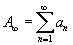
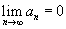

The alternating series test is used when the terms of the underlying sequence alternate. Suppose we have a series

where the an alternate positive and negative. If an+1 < an (i.e., the terms get smaller) and if
then the series converges.If a series Σ | an | converges then the series Σ an converges and is said to converge absolutely. If Σ | an | diverges but Σ an converges, then Σ an is said to converge conditionally.